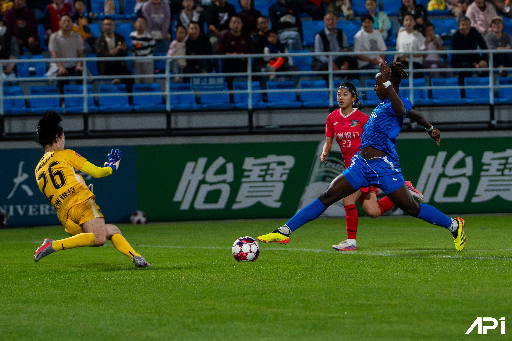

看作品
走进底线
↗
比赛目录
03
关于 AP1
↗
女超联赛
/
武汉车谷江大女足 vs 浙江杭州银行女足
2026.10.25

照片正在载入…
AP1 / FIELD NOTES
底线视角
我的拍摄位置 ↗
场上交锋
门前一瞬
01
/
19
← → 切换作品
← 返回作品
TOUCHLINE AT NIGHT
全屏 ↗
NIGHT SESSION / 2026.10.25
此刻，你在底线。
拖动环顾，让目光走进球场。
＋
门前一瞬
进入这一刻 ↗
01 / 03
角旗附近
站在白线以外，望向比赛。
角旗附近
球门侧后方
转向看台
此处作品
走近作品 ↗
视线归正 ↺
导览 ☰
正在点亮球场…
当前设备未能开启三维画面。
返回作品预览 →
← 回到刚才的位置
场景融合 · 拖动轻移视角
对比普通画面
←
→
球场为摄影体验场景，非实际场馆复原。
这一场的底片
19 FRAMES
⌃
全部
场上
人物
组照
每一次快门，都在现场。
AP1 / NOTES
打开原文件 ↗
原始尺寸
‹
›
照片完整构图 · 按 Esc 返回